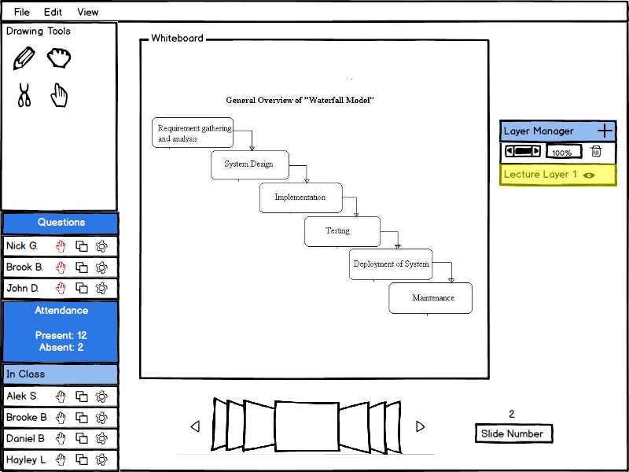
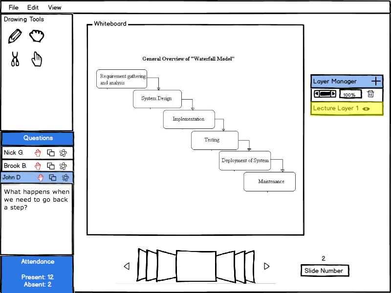

When a student virtually raises their hand, the hand symbol by their name in the roster will turn red. The presenter views the question the student has that is raising their hand by clicking on their name.
Figure 1 shows the changed hand icon color by the student's name with a question.

Figure 1: Student with red hand by their name is electronically raising their hand
To view the question that the student has, the presenter can click their name in the roster. Their name expands to show the question that they have asked.
Figure 2 shows the name expanded in the roster exposing the student's question.

Figure 2: View of question associated with student raising their hand
At this point in the lecture, the presenter asks the students in the classroom to draw a layer on the memory map to show what happens, and send it to him. This interaction is covered in the next section 2.5.3.